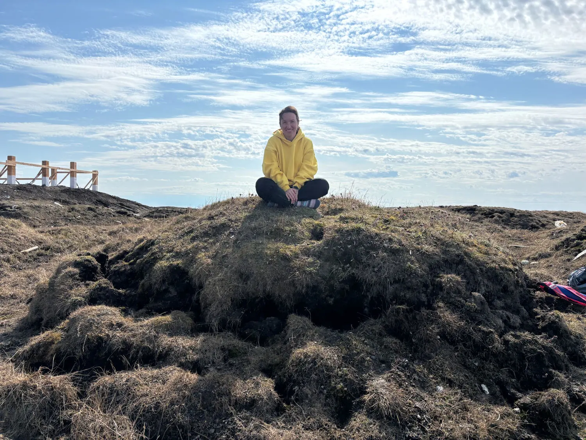

When Arctic science becomes music
A performance of Auksalaq at UVA prompted reflections on communicating Arctic environmental change through art and research.
Read post text from archive
Last week, I had the opportunity to experience Auksalaq, a Telematic Opera, created by Matthew Burtner and Scott Deal and performed by the EcoSono Ensemble as part of UVAs Arts on the Hill series.
Auksalaq, meaning melting snow in I?upiaq, brings together music, visual art, and Arctic environmental science. Through sonification, scientific observations of wind, ice, and clouds become music, while the musicians even use melting ice and water as instruments.
For me, this was a deeply emotional experience. It was overwhelming to think about how rapidly the Arctic is changing. I kept imagining a child walking through the Arctic snow in his parka, surrounded by a landscape that might look very different by the time he grows up.
But it was emotional for another reason, too. As someone studying Arctic permafrost, I often struggle to explain why people living thousands of miles away should care about what is happening in the Arctic. Saying that the Arctic is warming three to four times faster than the global average doesnt always communicate what that actually means for peoples lives. The performance reminded me that while climate change may feel distant to some Arctic communities, these changes are not distant predictions. They are already affecting homes, infrastructure, and landscapes that have supported generations of people.
Matthew managed to communicate through music what I sometimes struggle to explain through science. And it reminded me why the research we do matters.
Thank you to Matthew Burtner and the EcoSono Ensemble for such a meaningful experience, and to UVA President Scott C. Beardsley and Claire Dufournet Beardsley for hosting this wonderful event and bringing Arctic science and art together at Carr's Hill.
Photo descriptions:
1. Music and melting ice: A unique musical setup at Auksalaq, where melting ice and water became part of the live performance.
2. The performers: Matthew Burtner and the EcoSono Ensemble taking their final bow after the performance of Auksalaq at UVA's Arts on the Hill.
3. Arctic landscape: A tundra shoreline affected by erosion near Utqia?vik, Alaska, photographed during my fieldwork. A reminder of the Arctic landscapes at the heart of both my research and this performance.
#ArcticResearch #ScienceCommunication #ArtAndScience #ClimateChange #UVA